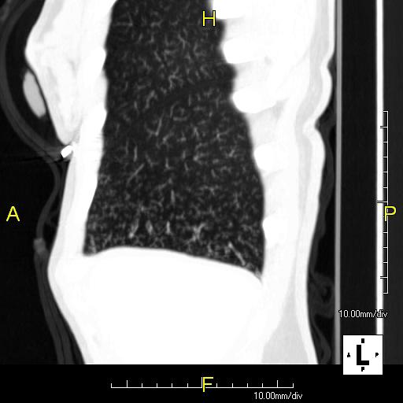

Ficha del catálogo
Patrón de árbol en brote
- Sistema
- Respiratorio
- Modalidad
- TC
- Región
- Tórax
- Dificultad
- Intermedio
Hallazgo tomográfico que traduce el relleno de los bronquiolos centrolobulillares por secreciones, pus o tejido inflamatorio. Su nombre procede del parecido con las ramas de un árbol en primavera. Es un marcador muy útil de enfermedad de la vía aérea pequeña y en la mayoría de los casos indica un proceso infeccioso o aspirativo.
Técnica
Tomografía de tórax con cortes finos y reconstrucción de alta resolución sin contraste, revisada con ventana pulmonar y reconstrucciones de proyección de máxima intensidad.
Qué observar
- Estructuras nodulares ramificadas de pocos milímetros en situación centrolobulillar
- Separación constante de la superficie pleural, que queda respetada
- Distribución parcheada por segmentos, con zonas de pulmón normal intercaladas
- Engrosamiento de las paredes bronquiales acompañante
- Consolidaciones asociadas cuando el proceso progresa
- Predominio en segmentos dependientes si el origen es aspirativo
Hallazgos
Micronódulos ramificados centrolobulillares agrupados y de distribución parcheada, que no alcanzan la pleura.
Perlas
El árbol en brote habla de la vía aérea y casi siempre de infección. Ante este patrón conviene revisar los segmentos afectados y buscar bronquiectasias, cavidades o signos de aspiración que orienten la causa.
Diagnóstico diferencial
- Nódulos perilinfáticos
- Se sitúan sobre cisuras y tabiques y contactan con la pleura.
- Nódulos aleatorios
- Distribución difusa uniforme con nódulos subpleurales y cisurales.
- Bronquiolitis respiratoria del fumador
- Nódulos centrolobulillares mal definidos en vidrio deslustrado y sin ramificación.
Simuladores
- Vasos centrolobulillares prominentes
- Artefacto de movimiento cardiaco en língula
- Reconstrucciones gruesas que emborronan la morfología
Por modalidad
- RX
- No permite ver el patrón salvo como micronodulación difusa inespecífica
- TC
- Es el único método que lo demuestra con fiabilidad
Protocolo
Cortes finos con reconstrucción de alta resolución y proyecciones de máxima intensidad de pocos milímetros para valorar la morfología ramificada.
Clasificación
Errores frecuentes
- Confundir vasos centrolobulillares normales con nódulos
- No clasificar la distribución de los nódulos antes de proponer el diagnóstico
- Olvidar buscar micobacterias no tuberculosas ante un árbol en brote crónico

arbol en brote nodulos centrolobulillares bronquiolitis via aerea pequena alta resolucion